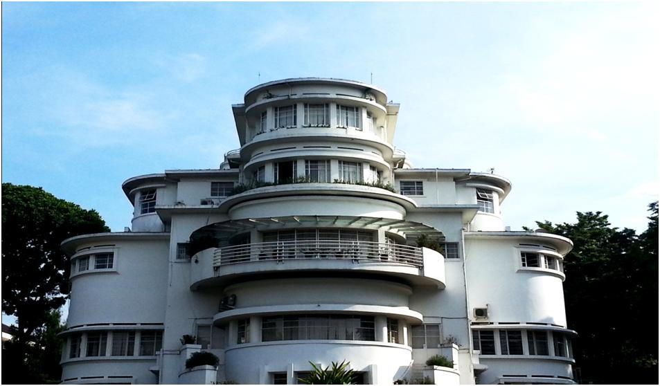
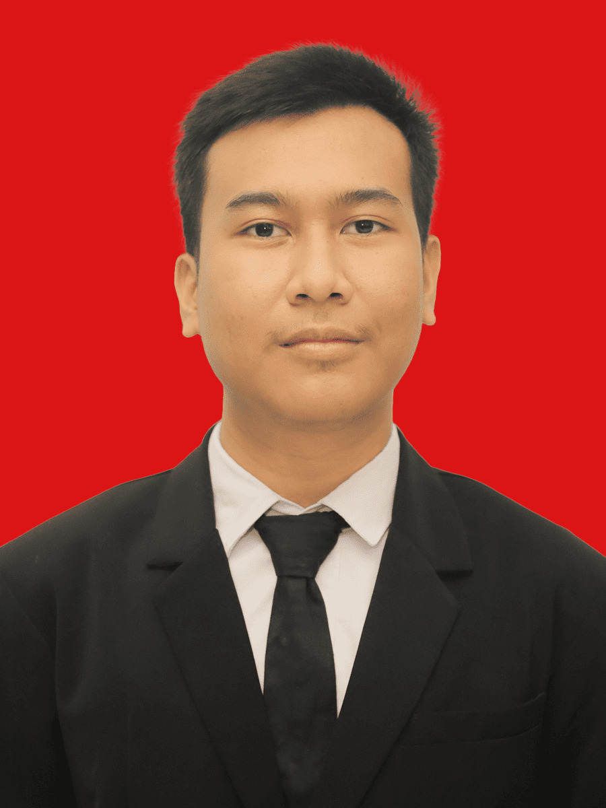
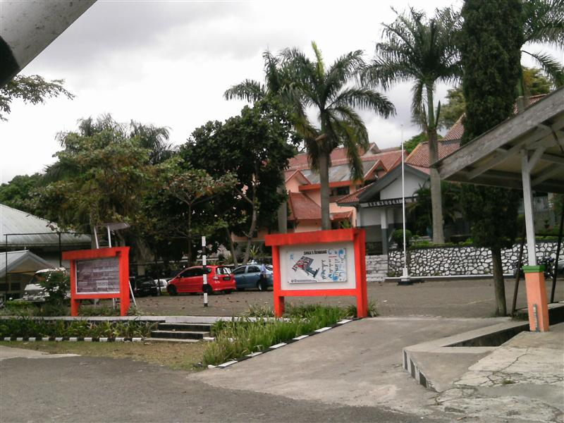
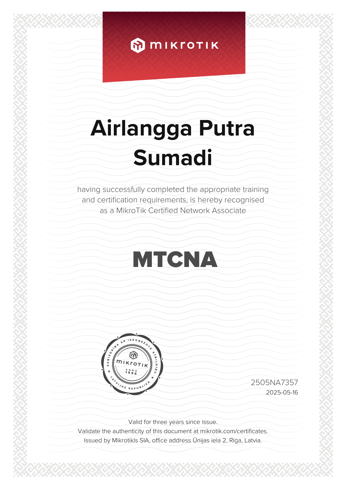

2025 — Sekarang
Universitas Pendidikan Indonesia
S1 Pendidikan Ilmu Komputer · FPMIPA
Mempelajari ilmu komputer, ilmu pedagogi, dan cara menyampaikan konsep teknologi melalui pembelajaran.

Mahasiswa S1 Pendidikan Ilmu Komputer UPI yang tertarik pada jaringan komputer, perangkat keras, administrasi Linux, dan pengembangan web.

2025 — Sekarang
S1 Pendidikan Ilmu Komputer · FPMIPA
Mempelajari ilmu komputer, ilmu pedagogi, dan cara menyampaikan konsep teknologi melalui pembelajaran.

2022 — 2025
Teknik Komputer dan Jaringan
Belajar konfigurasi jaringan LAN/WAN, subnetting, routing, Linux, serta perawatan perangkat komputer.

Berikut beberapa materi dan kompetensi yang pernah saya pelajari. Pilih sertifikat untuk melihat dokumennya.

MikroTik Certified Network Associate (MTCNA)
.jpg)
Prestasi - SE FEST 2023
Merancang antarmuka web edukasi bertema aksi iklim (17 SDG) dan keberlanjutan lingkungan bersama tim SMK Negeri 5 Bandung.

Pengalaman lapangan · Fakultas Hukum Universitas Pasundan
Membantu maintenance perangkat, instalasi sistem operasi, dan penanganan kendala jaringan selama PKL.
TCP/IP, subnetting CIDR & VLSM, routing, MikroTik RouterOS, Linux CLI, dan dasar administrasi server.
Perakitan PC, perawatan laptop, instalasi sistem operasi, crimping kabel, dan troubleshooting dasar.
HTML, CSS, JavaScript dan pembuatan User Interface
Saya terbuka untuk diskusi seputar jaringan komputer, web, kegiatan akademik, dan peluang belajar bersama.